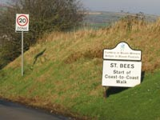
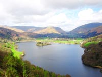

Wainwright's Coast to Coast Walk

{kind=link}
"A Coast to Coast" to give it the proper title, was devised in 1973 by Alfred Wainwright and extends across his beloved Lake District, the Yorkshire Dales and the North Yorkshire Moors from St Bees in the west to Robin Hoods Bay in the east.
There is not an officially designated route thus it cannot be found on the Ordnance Survey Map of the area. Wainwright left it to the discretion of the walkers to devise their own although a string of villages along the way have become regularly chosen way-points with nearby accommodations geared to the needs of weary hungry but happy participants.

{kind=link}
Allow 10-14 days which includes a rest day in which to complete the whole route. Check for public transport services, eating places, post offices, banks and cash points in or close to villages on the route and carry good quality waterproofs, maps and compass. Some sections are physically demanding and include steep ascents/descents, wet ground and long stretches of open to the elements moorland.
It is a testing walk and one not to be taken lightly but is one journey to be remembered across some of the regions most unforgettable scenery.
Wainwright's A Coast to Coast west to east suggested route
St. Bees – Ennerdale – Stonethwaite – Grasmere – Patterdale – Shap – Kirkby Stephen – Keld – Reeth – Richmond – Danby Wiske – Ingleby – Blakey – Glaisdale – Robin Hoods Bay.
Maps
Ordnance Survey from West to East. OL4, OL5, OL19, OL 26, OL 27, 304.
Alfred Wainwright’s route is not marked on any of them.
St. Bees to Ennerdale
A good nights sleep is essential before setting out on the 15 mile first stage to Ennerdale Bridge, and you will find a good range of accommodation and eating places in this popular coastal village of St. Bees. There doesn't seem to be an officially designated starting point for the Coast 2 Coast Walk but Wainwright felt that walkers should begin from a point on the beach. Some of the more hardy dip their feet in the sea before beginning and observe the same ritual on arrival on the beach at Robin Hoods Bay. Others prefer to carry a St Bees beach pebble to the sands on the east coast but one intrepid walker totally immersed himself in the chilly waters prior to departure and the same on arrival.
The village of Cleator is about the mid-way point on this stage where a pub, eating places and a shop provide a welcome respite.
Ennerdale Bridge is reached after around 7 hours. It's a place for “escaping to” standing as it does only a mile from Ennerdale Lake, the most remote of the Lake District waters and surrounded by the fells of the 800 metre High Stile and Starling Dodd. Wainwright christened this area “The Western Fells” from whose summits the imposing mounds of Great Gable, Scafell Pike and Haystacks can be clearly seen in the near distance.
Walkers, hikers, rock climbers, cyclists, mountain bikers and horse riders come to find peace and solitude along the challenging trails in the nearby unspoiled terrain of the Ennerdale Valley. Hotels, guest houses, bed and breakfasts, self catering, hostels, bunk houses, camping and caravan sites combine to present a “travellers rest” of short and longer term holiday accommodations. Ennerdale Bridge is a “stop-over” where all the best in menus of locally produced food, thirst quenching real ales and generous hospitality are there to be enjoyed amid the remembered forever beauty of the Western Lake District.
Bus Services - Service 217 operates every Wednesday to and from Frizington/Cockermouth.
Rail Stations - Carlisle and Penrith are the nearest mainline stations with onward local services to Workington and Cockermouth.
Post Offices - Cleator Moor and Frizington.
Please support “Wild Ennerdale” devoted to ensuring the area remains unspoiled. www.wildennerdale.co.uk
Nearby villages. Cleator Moor, Frizington, Rowrah, Kirkland (not to be confused with Kirkland in the town of Kendal)
St Bees information
Ennerdale to Stonethwaite
The first mile or so of the route to Stonethwaite runs alongside Ennerdale Water before heading for higher ground where the Lake District’s most remote Youth Hostel stands. Open only during the summer months, the hostel shop sells a selection of sandwiches and drinks. Cooked meals are on offer but normally require an order by telephone several days in advance. There are a number of camp-sites and bed and breakfasts available a few miles off the recognised route before reaching Stonethwaite.
Stonethwaite and its near neighbour Rosthwaite are where the Coast to Coast route links with the Cumbria Way Walk and both are favourite holiday destinations. Consequently during the High season, demands for lodgings increase, and although a whole range of holiday accommodation is available within a radius of 2 – 3 miles, it is advisable to confirm bookings several weeks in advance.
Postal Services - Stonethwaite Post Office. Open 9.30 am – 12.30pm on Wednesdays, Thursdays, Fridays and Saturdays. 9.30am – 5pm. on Tuesdays. 9.30am. - 1pm. on Mondays.
Food and Drink - Appetising choices of pub food, restaurants, cafés and tea rooms.
Bus Services - The Borrowdale Rambler. Service 78. Keswick, Seatoller via Derwentwater Lake Shore, Grange in Borrowdale and Rosthwaite.
The Honister Rambler. Service 77/77A. Portinscale, Catbells, Grange in Borrowdale, Seatoller, Honister Slate Mine, Buttermere, Lorton and Whinlatter Forest.
Nearby Attractions -
Honister Slate Mine. Producer of the famous Lakeland Green Slate. Guided Tours. www.honister-slate-mine.co.uk
The Via Ferrata - (Iron Way) Have you a head for heights? Honister Slate Mines exciting visitor attraction to the summit of Fleetwith Pike at 2160 feet.
Lake Buttermere - Gateway to the walks leading to the summits of Haystacks and Red Pike. At his request, Alfred Wainwrights ashes were scattered on the summit of Haystacks. See his favourite view from the window of Buttermere Church.
Grange in Borrowdale - A lovely riverside village 4 miles away standing at the entrance to the Jaws of Borrowdale.
The Bowder Stone - A 2000 ton boulder possibly washed down from Scotland during the Ice – Age.
Stonethwaite – Grasmere – Patterdale
On leaving Stonethwaite the route takes the walker over Greenup Edge and Helm Crag Ridge before descending in to Grasmere. The lovely village setting together with its William Wordsworth associations attracts visitors from the world over and the poet's burial place in the grounds of St Oswald's Church is said to be one of the most visited shrines in Europe.
Walkers of the Coast to Coast often choose to stay at least one night, but do not forget to register an advance booking if wishing to stay within the village, especially between the months of April to October.
There's a range of shops selling food, souvenirs, gifts, clothing and footwear and a good choice of pubs, restaurants, tearooms and cafés.
Post Office - opens on Mondays, Tuesdays, Wednesdays and Fridays from 9am – 5pm and from 9am – 12.30pm on Thursdays and Saturdays. Cash Point and currency exchange.
Special Attractions -
The 13th C St Oswald's Church and the family graves of William Wordsworth.
Wordsworth “Seat” on the shore of Grasmere Lake, where Wordsworth often sat to enjoy his favourite view.
Annual Rush Bearing Ceremony held in August. A colourful procession through the village.
Grasmere Sports - An annual event held since 1852 in August. Features Cumberland & Westmorland Wrestling, fell racing and hound trailing. www.grasmeresportsandshow.co.uk See our Events Page for more details.
Dove cottage, Rydal mount and Dora's Field.
Sarah Nelsons Shop and Bakery - Taste the famous gingerbread. www.grasmeregingerbread.co.uk
Bus Services - Open Top Service 599 between Grasmere, Ambleside and Windermere Railway Station.
Service 555 operates between Kendal, Windermere, Ambleside, Grasmere, Keswick and Carlisle. For details go to www.carlberry.co.uk
Rail Services - Windermere is the nearest station.
Useful sites - www.grasmereandrydal.org.uk www.grasmere.com
Having paused or rested overnight in Grasmere the walk progresses on to Grisedale Hause and Grisedale Tarn from where on a clear day the lake of Ullswater comes in to view. At this point, there's an opportunity to switch from the traditional path to more strenuous efforts over the 880 metres height of Fairfield or the even more demanding alternative via Dollywagon Pike and the precarious crossing of the narrow ridge of Striding Edge and on down to Patterdale.
Patterdale really is a superb location at the head of Lake Ullswater and naturally attracts visitors from far and wide who come not only for the magnificent scenery but to roam the Helvellyn range of fells and walk the formidable Striding Edge. The village serves the visitor from a good choice of pubs, eating places, a general store/post office selling food, postcards, walking equipment and Coast to Coast souvenirs. All types of short and long term holiday stays are available, but again, this is a popular area and so reservations well in advance are needed.
Less than a mile away and not too far from where Wordsworth wrote of the host of golden daffodils is the lakeside village of Glenridding. This is a visitor destination equal in popularity to Patterdale, not only with walkers and climbers but for those who just want to “mess around in boats”. There are shops, pubs and eating places all happy to provide holidaymakers with the taste of Cumbrian hospitality.
Bus Services - connecting Patterdale, Penrith, Keswick, Windermere and Troutbeck. For details go to www.carlberry.co.uk www.mountain-goat.com
Rail Services - Nearest station. Penrith.
Ullswater Steamers. Take a lake ride to Pooley Bridge.
Stop and See:
Aira Force. Fine views from the bridge overlooking the Lake District's best known waterfall. Wordsworth referred to Aira Force in his poem, The Somnambulist, where Emma, engaged to be married to a gallant knight, Sir Eglamore, was awoken whilst sleepwalking at the top of the falls and fell to her death.
Tourist Information Centre - Located in Glenriddings main car park. Tel: 017684-82414.
Patterdale – Shap – Kirkby Stephen
The section between Patterdale and Shap does not have any places from which to buy refreshments.
Kidsty Pike is about the half-way mark whose 780 metre summit is the only location in England where Golden Eagles have been known to perch. From here, the trail descends to the man-made Haweswater. Haweswater was created as a reservoir in 1929 amid strenuous opposition to the flooding of a tranquil valley and its two villages of Measand and Mardale Green.
The ruins of the 12th C Shap Abbey mark the last mile before reaching Shap village which is a well frequented stop-over on the Lands End to John- O- Groats Cycle Route and the Coast 2 Coast Cycle Way as well as the Coast to Coast Walk. Traditional inns offer comfortable bed and breakfast accommodation and serve lunchtime and evening meals. (please note that some only provide meals from April to October) A few shops sell basic needs.
Post Office - Open Monday – Thursday 9am-5.30pm and Friday and Saturday 9am- noon. The nearby village of Bampton also has a Post office opening on Mondays from 9am – 1pm and 9am until noon on Tuesdays and Wednesdays.
Bus Services - Shap stands on the main route between Kendal and Penrith. Details from www.travelcumbria.org.uk
Rail Services - Kendal and Oxenholme are the nearest stations.
For more information about the Golden Eagles www.rspb.org.uk/reserves/guide/h/haweswater
Local website. www.shapcumbria.co.uk
After leaving Shap, the village of Crosby Ravensworth is the next port of call on the route. King Charles 2 also rested here together with his army in 1651 on his march from Scotland after his Coronation at Scone. A monument,”Black Dub”, marks the place and event.
The fells surrounding Crosby Ravensworth hold clear evidence of prehistoric settlements and as such have been designated as a Site of Special Scientific Interest. Also, they are protected breeding grounds for many species of bird life. Walkers have a choice from all categories of holiday accommodation dispersed around the area which includes the pretty communities of Reagill, Sleagill and, Maulds Meaburn, described by some as one of the most beautiful villages in the country. The rough uplands and the National Nature Reserve around Great Asby come next and followed by the hamlet of Soulby standing close to the River Eden. All these villages have within them, or nearby, walker friendly accommodations with owners happy to impart useful advice and knowledge of the surrounding countryside.
Kirkby Stephen
An ancient market town popular with the walkers and riders of the Cumbria Way Cycle Route, the Coast to Coast Walkers, and other longer stay visitors who use it as a base from which to explore the moorlands of the Yorkshire Pennines and Eastern Lake District fells. There's plenty of shops and stores providing all manner of goods, a chemist, Post Office, Bank, Cash Point, pubs, cafés, tea-rooms and restaurants most of whom feature menus cooked from local produce. A standard range of accommodation is on hand with many specialising in providing for short stay walkers and cyclists.
The Parish Church is well worth a visit. It's known as the “Cathedral of the Dales” and is only second in size to the Holy Trinity Parish Church in Kendal which is the largest in Cumbria. The “Loki Stone”, a relic from the times of the Viking settlers in the region is displayed inside the church whose stained glass windows are additional items of special interest.
The rail station is a mile from the town centre and a stop on the ever popular Settle to Carlisle Railway and many take the opportunity to visit the impressive engineering feat of Smardale Viaduct where the line crosses the Smardale Valley a few miles away.
Bus Services -
Connections to Penrith, Appleby, Brough, Sedbergh, Kendal. For details of timetables visit
www.kirkby-stephen.com and www.sedbergh.org.uk
Tourist Information Centre - 017683-71199 or visit www.visiteden.co.uk Buy your Coast to Coast Path merchandise here.
Classic Coach Tours. Summer tours of the area along Heritage Routes in vintage half-cab buses. Great fun. www.cumbriaclassiccoaches.co.uk
Progressing on via Keld and Reeth to Richmond in North Yorkshire the walk enters the head of the Swaledale Valley at Keld. This is a region which perfectly showcases the beauty of the Yorkshire Dales and moors with a combination of trails, footpaths, riverside walks, waterfalls and a rural tranquillity surrounded by the higher ground of Rogans Seat, Lovely Seat, Great Shunner fells and Whitaside Moor.
Keld
Positioned on the Coast to Coast Walk and the long distance footpath of the Pennine Way creates a strong demand for accommodation.
Post Office - None. Nearest are in the nearby villages of Muker and Reeth.
Shops - None. General stores in Muker and Reeth stocking fresh produce, groceries, cakes, beer wine and spirits and maps and open 7 days a week.
Bus Services - www.dalesbus.org www.traveldales.org.uk for details.
Mobile Phone signals - Poor in this area.
Reeth
A lovely Dales village of neat stone cottages gathered around the village green. There's a well stocked general store, post office, gift and craft shops, cafés, tea-rooms, ice cream parlour and a museum of Swaledale history staffed entirely by volunteers. The annual Swaledale Festival of Live Music featuring classical, choral, jazz and folk and the ever popular Agricultural Show attracts large crowds during the summer months of late May and late August respectively and so there's an increased demand for accommodation at these times. Extend your accommodation search to the villages of Healaugh, Marrick, Fremington and Grinton for a choice of bed & breakfasts and camping sites.
Post Office - Open Monday to Friday 9am – 5.30pm and Saturday 9am – 12.30pm. Tel: 01748-884201.
Museum - www.swaledalemuseum.org
Bus Services - www.dalesbus.org and www.traveldales.org.uk
Local Information - www.reeth.org
Richmond
Richmond is a town name shared by others world wide, but Richmond Yorkshire is regarded as the mother of them all. This old market town, mentioned in the Doomsday Book is dominated by the presence of an 11th C castle under which, legend says, the body of King Arthur lays. Richmond is one of the most popular tourist destinations in the county. Its cobbled market place, museums, Georgian theatre, antique shops, arts and craft displays and ancient monuments all combine to create a strong historical appeal few are able to resist. Modern shops and stores merge comfortably in to this setting providing townsfolk and visitors with the full range of business and social facilities.
Attractions
Richmond Castle. One of the oldest Norman castles in Britain. www.richmond.org
Richmonshire Museum. Provides history of the lead mining industry and for fans of the TV production of James Herriots “All Creatures Great and Small”, a film set from the series is on display.
Georgian Theatre Royal and Museum - Built in 1788. Productions of music, comedy, drama dance and pantomime. www.georgiantheatreroyal.co.uk
Green Howard Museum - History of Yorkshire's famous army regiment. www.greenhowards.org.uk
Easby Abbey - The ruins of St. Agatha's founded around 1152.
Riverside Walks - A favourite is circular route alongside the River Swale to Whitcliff Scar via Easby Abbey and back to the town.
Town Markets - Saturday Outdoor Market; Indoor Market from Monday to Saturday; Farmers Markets on 3rd Saturday of the month; Arts and Crafts Fairs on Sundays from Easter to Autumn.
Services.
Bus Services - Connections to Darlington, Leyburn, Northallerton, Barnard Castle and Catterick.
Rail Services - None. Nearest are Darlington, Northallerton, Thirsk.
Tourist Information Centre - Situated in the Friary Gardens. Tel:01748-850252.
Richmond is twinned with St Aubin Du Cormier in France and Nordfron in Norway.
Further Information about Richmond from www.richmond.org
Glaisdale
Standing on a hillside above the River Esk, Glaisdale is another of the several villages in the walkers pleasure grounds of the North Yorkshire Moors and the Esk Valley. There's a village store/post office, meals and drinks in a welcoming pub, a church, and a station stop on the picturesque Esk Valley Railway running between Whitby and Middlesbrough and connecting the adjoining villages of Castleton, Danby, Lealholm, Egton and Grosmont. Grosmont links with the beautifully preserved North Yorkshire Moors Railway which is an absolute treat for young and old. www.northyorkshiremoorsrailway.com or www.nymr.co.uk
Activities -
Walking, cycling, riding trails and fly fishing for salmon and brown trout.
Attractions -
Beggars Bridge. Spanning the river close to the railway station it is recorded as having been built in 1619 by a Thomas Ferris (Ferries) who, according to one version of the story was a poor local youth in love with the daughter from a rich family but denied contact by the parents. He left to seek his fortune, in which he was successful, and on his return commissioned the bridge to be built as a symbolic gesture to proclaim that future lovers would never be separated.
Bus Services - For details www.getdown.org.uk/bus
Robin Hoods Bay
Welcome to Robin Hoods Bay, the end of your walk or maybe the beginning. Whichever, don't forget to observe tradition and dip your feet in the sea. This once thriving large fishing village, now largely given over to tourism, is all that one imagines a smuggler's haunt to be. Narrow cobbled streets lead down to the sea whose rocky shoreline at low tide has yielded many interesting fossil finds.
General stores, gift shops, cafés, tea-rooms, pubs and a Post Office serve the community together with the many visitors who arrive each year to set up a base from which to explore the Heritage coastline and the North Yorkshire Moors National Park.
Attractions -
Robin Hoods Bay Museum. Fishing, shipping and local history over the centuries. www.museum.rhbay.co.uk
Old Coastguard Station. Visitor and Education Centre.
Old St. Stephens Church. Stands on the hillside above the village. Maintains a seafaring theme with memorials to the shipwrecked.
Local Walks -
Robin Hoods bay to Boggle Hole. 1 mile.
To Sandsend. A cliff walk to the beach. 3 miles.
To Ravenscar. Via the beach, cliff walk or disused railway line. 7 miles.
To Falling Foss. Waterfall. 7 miles.
Long distance Walk.
The Cleveland Way.
Bus Services -
Connections to Scarborough, Whitby and Middlesbrough. Details at www.carlberry.co.uk
Rail Services - Nearest station is Whitby.
Tourist Information Centre - Whitby. Tel: 01723-383636. www.discoveryorkshirecoast.com
Celebrate completion of the walk by having an individual handmade wooden plaque carved by “The Plaques” a small cottage industry situated in the village.